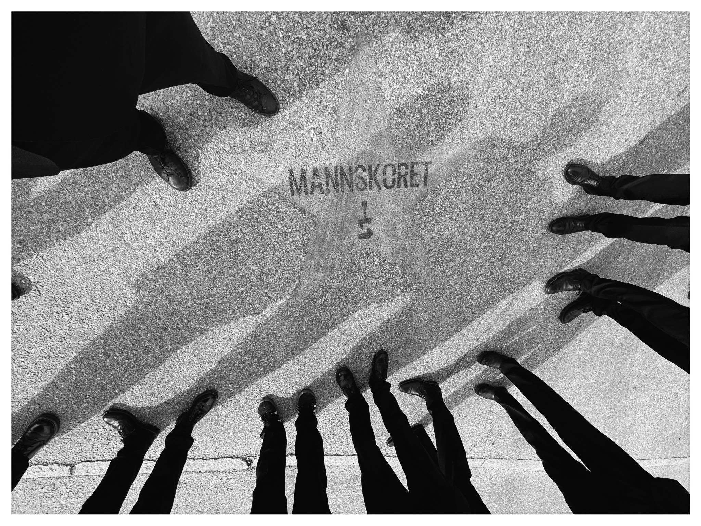

Medlemskap
Bli med i koret?
Reglene for opptak er sånn:
- 1 Finn tre mann som anbefaler deg
- 2 Send en søknad som forteller om din bakgrunn og overbeviser om din motivasjon
- 3 Ikke få et veto mot deg fra et av medlemmene (man vet aldri hva slags fortid folk kan ha sammen, men hittil har det aldri skjedd)
- 4 Passere prøvesynging
Mannskoret er en gjeng av venner og venners venner. Prinsippet om anbefalinger har fungert godt i 20 år. Derfor holder vi på det.
Når du har funnet dine tre «faddere» sender du en søknad til styreleder med navn på de tre. I søknaden forteller du litt om deg selv, din bakgrunn og musikalske erfaring. Vi vil også gjerne vite hvorfor du vil bruke alle tirsdagskvelder resten av ditt liv på å synge i mannskor på Kampen Bistro.
Når nye medlemmer tas opp har alle eksisterende medlemmer anledning til å legge ned veto mot opptak. Det er fordi vi ikke vil ha gamle konflikter inn i koret. Hittil har ikke det skjedd.
Til slutt må du synge for dirigenten så vi vet at du har noe i et kor å gjøre, og kan finne ut hvilken stemmegruppe du hører til i.
